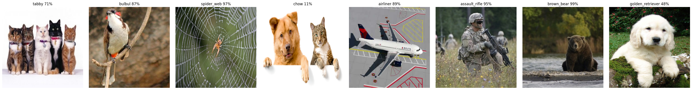

<!DOCTYPE html>

<html>
  <head>
    <meta charset="utf-8" />
    <meta name="viewport" content="width=device-width, initial-scale=1.0" /><meta name="generator" content="Docutils 0.17.1: http://docutils.sourceforge.net/" />

    <title>Explaining Model’s Predictions &#8212; Keras Explainable</title>
    
  <!-- Loaded before other Sphinx assets -->
  <link href="_static/styles/theme.css?digest=1999514e3f237ded88cf" rel="stylesheet">
<link href="_static/styles/pydata-sphinx-theme.css?digest=1999514e3f237ded88cf" rel="stylesheet">

    
  <link rel="stylesheet"
    href="_static/vendor/fontawesome/5.13.0/css/all.min.css">
  <link rel="preload" as="font" type="font/woff2" crossorigin
    href="_static/vendor/fontawesome/5.13.0/webfonts/fa-solid-900.woff2">
  <link rel="preload" as="font" type="font/woff2" crossorigin
    href="_static/vendor/fontawesome/5.13.0/webfonts/fa-brands-400.woff2">

    <link rel="stylesheet" type="text/css" href="_static/pygments.css" />
    <link rel="stylesheet" href="_static/styles/sphinx-book-theme.css?digest=5115cc725059bd94278eecd172e13a965bf8f5a9" type="text/css" />
    <link rel="stylesheet" type="text/css" href="_static/jupyter-sphinx.css" />
    <link rel="stylesheet" type="text/css" href="_static/thebelab.css" />
    <link rel="stylesheet" type="text/css" href="_static/css/custom.css" />
    
  <!-- Pre-loaded scripts that we'll load fully later -->
  <link rel="preload" as="script" href="_static/scripts/pydata-sphinx-theme.js?digest=1999514e3f237ded88cf">

    <script data-url_root="./" id="documentation_options" src="_static/documentation_options.js"></script>
    <script src="_static/jquery.js"></script>
    <script src="_static/underscore.js"></script>
    <script src="_static/doctools.js"></script>
    <script src="_static/thebelab-helper.js"></script>
    <script src="_static/scripts/sphinx-book-theme.js?digest=9c920249402e914e316237a7dbc6769907cce411"></script>
    <script src="https://cdnjs.cloudflare.com/ajax/libs/require.js/2.3.4/require.min.js"></script>
    <script src="https://cdn.jsdelivr.net/npm/@jupyter-widgets/html-manager@^1.0.1/dist/embed-amd.js"></script>
    <link rel="index" title="Index" href="genindex.html" />
    <link rel="search" title="Search" href="search.html" />
    <link rel="next" title="AI Explaining Methods" href="methods/index.html" />
    <link rel="prev" title="keras Explainable" href="readme.html" />
    <meta name="viewport" content="width=device-width, initial-scale=1" />
    <meta name="docsearch:language" content="None">
    

    <!-- Google Analytics -->
    
  </head>
  <body data-spy="scroll" data-target="#bd-toc-nav" data-offset="60">
<!-- Checkboxes to toggle the left sidebar -->
<input type="checkbox" class="sidebar-toggle" name="__navigation" id="__navigation" aria-label="Toggle navigation sidebar">
<label class="overlay overlay-navbar" for="__navigation">
    <div class="visually-hidden">Toggle navigation sidebar</div>
</label>
<!-- Checkboxes to toggle the in-page toc -->
<input type="checkbox" class="sidebar-toggle" name="__page-toc" id="__page-toc" aria-label="Toggle in-page Table of Contents">
<label class="overlay overlay-pagetoc" for="__page-toc">
    <div class="visually-hidden">Toggle in-page Table of Contents</div>
</label>
<!-- Headers at the top -->
<div class="announcement header-item noprint"></div>
<div class="header header-item noprint"></div>

    
    <div class="container-fluid" id="banner"></div>

    

    <div class="container-xl">
      <div class="row">
          
<!-- Sidebar -->
<div class="bd-sidebar noprint" id="site-navigation">
    <div class="bd-sidebar__content">
        <div class="bd-sidebar__top"><div class="navbar-brand-box">
    <a class="navbar-brand text-wrap" href="index.html">
      
      
      
      <h1 class="site-logo" id="site-title">Keras Explainable</h1>
      
    </a>
</div><form class="bd-search d-flex align-items-center" action="search.html" method="get">
  <i class="icon fas fa-search"></i>
  <input type="search" class="form-control" name="q" id="search-input" placeholder="Search the docs ..." aria-label="Search the docs ..." autocomplete="off" >
</form><nav class="bd-links" id="bd-docs-nav" aria-label="Main">
    <div class="bd-toc-item active">
        <ul class="current nav bd-sidenav">
 <li class="toctree-l1">
  <a class="reference internal" href="readme.html">
   Overview
  </a>
 </li>
 <li class="toctree-l1 current active">
  <a class="current reference internal" href="#">
   Explaining
  </a>
 </li>
 <li class="toctree-l1 has-children">
  <a class="reference internal" href="methods/index.html">
   Methods
  </a>
  <input class="toctree-checkbox" id="toctree-checkbox-1" name="toctree-checkbox-1" type="checkbox"/>
  <label for="toctree-checkbox-1">
   <i class="fas fa-chevron-down">
   </i>
  </label>
  <ul>
   <li class="toctree-l2">
    <a class="reference internal" href="methods/saliency/gradients.html">
     Gradient Back-propagation
    </a>
   </li>
   <li class="toctree-l2">
    <a class="reference internal" href="methods/saliency/smoothgrad.html">
     Smooth-Grad
    </a>
   </li>
   <li class="toctree-l2">
    <a class="reference internal" href="methods/saliency/fullgrad.html">
     Full-Grad
    </a>
   </li>
   <li class="toctree-l2">
    <a class="reference internal" href="methods/cams/gradcam.html">
     Grad-CAM
    </a>
   </li>
   <li class="toctree-l2">
    <a class="reference internal" href="methods/cams/tta_gradcam.html">
     TTA Grad-CAM
    </a>
   </li>
  </ul>
 </li>
 <li class="toctree-l1">
  <a class="reference internal" href="wsol.html">
   WSSL
  </a>
 </li>
 <li class="toctree-l1">
  <a class="reference internal" href="contributing.html">
   Contributions &amp; Help
  </a>
 </li>
 <li class="toctree-l1">
  <a class="reference internal" href="license.html">
   License
  </a>
 </li>
 <li class="toctree-l1">
  <a class="reference internal" href="authors.html">
   Authors
  </a>
 </li>
 <li class="toctree-l1">
  <a class="reference internal" href="changelog.html">
   Changelog
  </a>
 </li>
 <li class="toctree-l1 has-children">
  <a class="reference internal" href="api/modules.html">
   Module Reference
  </a>
  <input class="toctree-checkbox" id="toctree-checkbox-2" name="toctree-checkbox-2" type="checkbox"/>
  <label for="toctree-checkbox-2">
   <i class="fas fa-chevron-down">
   </i>
  </label>
  <ul>
   <li class="toctree-l2 has-children">
    <a class="reference internal" href="api/keras_explainable.html">
     keras_explainable package
    </a>
    <input class="toctree-checkbox" id="toctree-checkbox-3" name="toctree-checkbox-3" type="checkbox"/>
    <label for="toctree-checkbox-3">
     <i class="fas fa-chevron-down">
     </i>
    </label>
    <ul>
     <li class="toctree-l3">
      <a class="reference internal" href="api/keras_explainable.engine.html">
       keras_explainable.engine package
      </a>
     </li>
     <li class="toctree-l3">
      <a class="reference internal" href="api/keras_explainable.methods.html">
       keras_explainable.methods package
      </a>
     </li>
    </ul>
   </li>
  </ul>
 </li>
</ul>

    </div>
</nav></div>
        <div class="bd-sidebar__bottom">
             <!-- To handle the deprecated key -->
            
            <div class="navbar_extra_footer">
            Theme by the <a href="https://ebp.jupyterbook.org">Executable Book Project</a>
            </div>
            
        </div>
    </div>
    <div id="rtd-footer-container"></div>
</div>


          


          
<!-- A tiny helper pixel to detect if we've scrolled -->
<div class="sbt-scroll-pixel-helper"></div>
<!-- Main content -->
<div class="col py-0 content-container">
    
    <div class="header-article row sticky-top noprint">
        


<div class="col py-1 d-flex header-article-main">
    <div class="header-article__left">
        
        <label for="__navigation"
  class="headerbtn"
  data-toggle="tooltip"
data-placement="right"
title="Toggle navigation"
>
  

<span class="headerbtn__icon-container">
  <i class="fas fa-bars"></i>
  </span>

</label>

        
    </div>
    <div class="header-article__right">
<button onclick="toggleFullScreen()"
  class="headerbtn"
  data-toggle="tooltip"
data-placement="bottom"
title="Fullscreen mode"
>
  

<span class="headerbtn__icon-container">
  <i class="fas fa-expand"></i>
  </span>

</button>
<a href="https://github.com/lucasdavid/keras-explainable"
   class="headerbtn"
   data-toggle="tooltip"
data-placement="bottom"
title="Source repository"
>
  

<span class="headerbtn__icon-container">
  <i class="fab fa-github"></i>
  </span>

</a>

<div class="menu-dropdown menu-dropdown-download-buttons">
  <button class="headerbtn menu-dropdown__trigger"
      aria-label="Download this page">
      <i class="fas fa-download"></i>
  </button>
  <div class="menu-dropdown__content">
    <ul>
      <li>
        <a href="_sources/explaining.rst.txt"
   class="headerbtn"
   data-toggle="tooltip"
data-placement="left"
title="Download source file"
>
  

<span class="headerbtn__icon-container">
  <i class="fas fa-file"></i>
  </span>
<span class="headerbtn__text-container">.rst</span>
</a>

      </li>
      
      <li>
        
<button onclick="printPdf(this)"
  class="headerbtn"
  data-toggle="tooltip"
data-placement="left"
title="Print to PDF"
>
  

<span class="headerbtn__icon-container">
  <i class="fas fa-file-pdf"></i>
  </span>
<span class="headerbtn__text-container">.pdf</span>
</button>

      </li>
      
    </ul>
  </div>
</div>

    </div>
</div>

<!-- Table of contents -->
<div class="col-md-3 bd-toc show noprint">
</div>
    </div>
    <div class="article row">
        <div class="col pl-md-3 pl-lg-5 content-container">
            <!-- Table of contents that is only displayed when printing the page -->
            <div id="jb-print-docs-body" class="onlyprint">
                <h1>Explaining Model’s Predictions</h1>
                <!-- Table of contents -->
                <div id="print-main-content">
                    <div id="jb-print-toc">
                        
                    </div>
                </div>
            </div>
            <main id="main-content" role="main">
                
              <div>
                
  <section id="explaining-model-s-predictions">
<h1>Explaining Model’s Predictions<a class="headerlink" href="#explaining-model-s-predictions" title="Permalink to this headline">#</a></h1>
<p>This library has the function <a class="reference internal" href="api/keras_explainable.html#keras_explainable.explain" title="keras_explainable.explain"><code class="xref py py-func docutils literal notranslate"><span class="pre">keras_explainable.explain()</span></code></a> as core
component, which is used to execute any AI explaining method and technique.</p>
<p>Think of it as the <code class="xref py py-meth docutils literal notranslate"><span class="pre">keras.Model#fit()</span></code> or <code class="xref py py-meth docutils literal notranslate"><span class="pre">keras.Model#predict()</span></code>
loops of Keras’ models, in which the execution graph of the operations
contained in a model is compiled (conditioned to <code class="xref py py-attr docutils literal notranslate"><span class="pre">Model.run_eagerly</span></code>
and <code class="xref py py-attr docutils literal notranslate"><span class="pre">Model.jit_compile</span></code>) and the explaining maps are computed
according to the method’s strategy.</p>
<p>Just like in <code class="xref py py-meth docutils literal notranslate"><span class="pre">keras.model#predict()</span></code>, <a class="reference internal" href="api/keras_explainable.html#keras_explainable.explain" title="keras_explainable.explain"><code class="xref py py-func docutils literal notranslate"><span class="pre">keras_explainable.explain()</span></code></a>
allows various types of input data and retrieves the Model’s associated
distribute strategy in order to distribute the workload across multiple
GPUs and/or workers.</p>
<div class="jupyter_cell docutils container">
<div class="cell_output docutils container">
</div>
</div>
<p>Firstly, we employ the <code class="xref py py-class docutils literal notranslate"><span class="pre">ResNet101</span></code> network pre-trained over the
ImageNet dataset:</p>
<div class="jupyter_cell jupyter_container docutils container">
<div class="cell_input code_cell docutils container">
<div class="highlight-ipython3 notranslate"><div class="highlight"><pre><span></span><span class="n">WEIGHTS</span> <span class="o">=</span> <span class="s1">&#39;imagenet&#39;</span>

<span class="n">input_tensor</span> <span class="o">=</span> <span class="n">tf</span><span class="o">.</span><span class="n">keras</span><span class="o">.</span><span class="n">Input</span><span class="p">(</span><span class="n">shape</span><span class="o">=</span><span class="p">(</span><span class="o">*</span><span class="n">SIZES</span><span class="p">,</span> <span class="mi">3</span><span class="p">),</span> <span class="n">name</span><span class="o">=</span><span class="s1">&#39;inputs&#39;</span><span class="p">)</span>

<span class="n">rn101</span> <span class="o">=</span> <span class="n">tf</span><span class="o">.</span><span class="n">keras</span><span class="o">.</span><span class="n">applications</span><span class="o">.</span><span class="n">ResNet101V2</span><span class="p">(</span>
  <span class="n">input_tensor</span><span class="o">=</span><span class="n">input_tensor</span><span class="p">,</span>
  <span class="n">classifier_activation</span><span class="o">=</span><span class="kc">None</span><span class="p">,</span>
  <span class="n">weights</span><span class="o">=</span><span class="n">WEIGHTS</span>
<span class="p">)</span>

<span class="n">prec</span> <span class="o">=</span> <span class="n">tf</span><span class="o">.</span><span class="n">keras</span><span class="o">.</span><span class="n">applications</span><span class="o">.</span><span class="n">resnet_v2</span><span class="o">.</span><span class="n">preprocess_input</span>
<span class="n">decode_predictions</span> <span class="o">=</span> <span class="n">tf</span><span class="o">.</span><span class="n">keras</span><span class="o">.</span><span class="n">applications</span><span class="o">.</span><span class="n">resnet_v2</span><span class="o">.</span><span class="n">decode_predictions</span>

<span class="nb">print</span><span class="p">(</span><span class="sa">f</span><span class="s1">&#39;ResNet101 with </span><span class="si">{</span><span class="n">WEIGHTS</span><span class="si">}</span><span class="s1"> pre-trained weights loaded.&#39;</span><span class="p">)</span>
<span class="nb">print</span><span class="p">(</span><span class="sa">f</span><span class="s2">&quot;Spatial map sizes: </span><span class="si">{</span><span class="n">rn101</span><span class="o">.</span><span class="n">get_layer</span><span class="p">(</span><span class="s1">&#39;avg_pool&#39;</span><span class="p">)</span><span class="o">.</span><span class="n">input</span><span class="o">.</span><span class="n">shape</span><span class="si">}</span><span class="s2">&quot;</span><span class="p">)</span>
</pre></div>
</div>
</div>
<div class="cell_output docutils container">
<div class="output stream highlight-none notranslate"><div class="highlight"><pre><span></span>Downloading data from https://storage.googleapis.com/tensorflow/keras-applications/resnet/resnet101v2_weights_tf_dim_ordering_tf_kernels.h5
</pre></div>
</div>
<div class="output stream highlight-none notranslate"><div class="highlight"><pre><span></span>
     8192/179518384 [..............................] - ETA: 0s
</pre></div>
</div>
<div class="output stream highlight-none notranslate"><div class="highlight"><pre><span></span>
  9035776/179518384 [&gt;.............................] - ETA: 0s
</pre></div>
</div>
<div class="output stream highlight-none notranslate"><div class="highlight"><pre><span></span>
 23584768/179518384 [==&gt;...........................] - ETA: 0s
</pre></div>
</div>
<div class="output stream highlight-none notranslate"><div class="highlight"><pre><span></span>
 39854080/179518384 [=====&gt;........................] - ETA: 0s
</pre></div>
</div>
<div class="output stream highlight-none notranslate"><div class="highlight"><pre><span></span>
 56664064/179518384 [========&gt;.....................] - ETA: 0s
</pre></div>
</div>
<div class="output stream highlight-none notranslate"><div class="highlight"><pre><span></span>
 72474624/179518384 [===========&gt;..................] - ETA: 0s
</pre></div>
</div>
<div class="output stream highlight-none notranslate"><div class="highlight"><pre><span></span>
 83836928/179518384 [=============&gt;................] - ETA: 0s
</pre></div>
</div>
<div class="output stream highlight-none notranslate"><div class="highlight"><pre><span></span>
 98017280/179518384 [===============&gt;..............] - ETA: 0s
</pre></div>
</div>
<div class="output stream highlight-none notranslate"><div class="highlight"><pre><span></span>
114810880/179518384 [==================&gt;...........] - ETA: 0s
</pre></div>
</div>
<div class="output stream highlight-none notranslate"><div class="highlight"><pre><span></span>
130940928/179518384 [====================&gt;.........] - ETA: 0s
</pre></div>
</div>
<div class="output stream highlight-none notranslate"><div class="highlight"><pre><span></span>
144809984/179518384 [=======================&gt;......] - ETA: 0s
</pre></div>
</div>
<div class="output stream highlight-none notranslate"><div class="highlight"><pre><span></span>
160456704/179518384 [=========================&gt;....] - ETA: 0s
</pre></div>
</div>
<div class="output stream highlight-none notranslate"><div class="highlight"><pre><span></span>
176472064/179518384 [============================&gt;.] - ETA: 0s
</pre></div>
</div>
<div class="output stream highlight-none notranslate"><div class="highlight"><pre><span></span>
179518384/179518384 [==============================] - 1s 0us/step
</pre></div>
</div>
<div class="output stream highlight-none notranslate"><div class="highlight"><pre><span></span>ResNet101 with imagenet pre-trained weights loaded.
Spatial map sizes: (None, 10, 10, 2048)
</pre></div>
</div>
</div>
</div>
<p>We can feed-foward the samples once and get the predicted classes for each sample.
Besides making sure the model is outputing the expected classes, this step is
required in order to determine the most activating units in the <em>logits</em> layer,
which improves performance of the explaining methods.</p>
<div class="jupyter_cell jupyter_container docutils container">
<div class="cell_input code_cell docutils container">
<div class="highlight-ipython3 notranslate"><div class="highlight"><pre><span></span><span class="n">inputs</span> <span class="o">=</span> <span class="n">prec</span><span class="p">(</span><span class="n">images</span><span class="o">.</span><span class="n">astype</span><span class="p">(</span><span class="s2">&quot;float&quot;</span><span class="p">)</span><span class="o">.</span><span class="n">copy</span><span class="p">())</span>
<span class="n">logits</span> <span class="o">=</span> <span class="n">rn101</span><span class="o">.</span><span class="n">predict</span><span class="p">(</span><span class="n">inputs</span><span class="p">,</span> <span class="n">verbose</span><span class="o">=</span><span class="mi">0</span><span class="p">)</span>

<span class="n">indices</span> <span class="o">=</span> <span class="n">np</span><span class="o">.</span><span class="n">argsort</span><span class="p">(</span><span class="n">logits</span><span class="p">,</span> <span class="n">axis</span><span class="o">=-</span><span class="mi">1</span><span class="p">)[:,</span> <span class="p">::</span><span class="o">-</span><span class="mi">1</span><span class="p">]</span>
<span class="n">probs</span> <span class="o">=</span> <span class="n">tf</span><span class="o">.</span><span class="n">nn</span><span class="o">.</span><span class="n">softmax</span><span class="p">(</span><span class="n">logits</span><span class="p">)</span><span class="o">.</span><span class="n">numpy</span><span class="p">()</span>
<span class="n">predictions</span> <span class="o">=</span> <span class="n">decode_predictions</span><span class="p">(</span><span class="n">probs</span><span class="p">,</span> <span class="n">top</span><span class="o">=</span><span class="mi">1</span><span class="p">)</span>

<span class="n">ke</span><span class="o">.</span><span class="n">utils</span><span class="o">.</span><span class="n">visualize</span><span class="p">(</span>
  <span class="n">images</span><span class="o">=</span><span class="n">images</span><span class="p">,</span>
  <span class="n">titles</span><span class="o">=</span><span class="p">[</span>
    <span class="s1">&#39;, &#39;</span><span class="o">.</span><span class="n">join</span><span class="p">(</span><span class="sa">f</span><span class="s2">&quot;</span><span class="si">{</span><span class="n">klass</span><span class="si">}</span><span class="s2"> </span><span class="si">{</span><span class="n">prob</span><span class="si">:</span><span class="s2">.0%</span><span class="si">}</span><span class="s2">&quot;</span> <span class="k">for</span> <span class="n">code</span><span class="p">,</span> <span class="n">klass</span><span class="p">,</span> <span class="n">prob</span> <span class="ow">in</span> <span class="n">p</span><span class="p">)</span>
    <span class="k">for</span> <span class="n">p</span> <span class="ow">in</span> <span class="n">predictions</span>
  <span class="p">]</span>
<span class="p">)</span>
</pre></div>
</div>
</div>
<div class="cell_output docutils container">
<div class="output stream highlight-none notranslate"><div class="highlight"><pre><span></span>Downloading data from https://storage.googleapis.com/download.tensorflow.org/data/imagenet_class_index.json
</pre></div>
</div>
<div class="output stream highlight-none notranslate"><div class="highlight"><pre><span></span>
 8192/35363 [=====&gt;........................] - ETA: 0s
</pre></div>
</div>
<div class="output stream highlight-none notranslate"><div class="highlight"><pre><span></span>
35363/35363 [==============================] - 0s 0us/step
</pre></div>
</div>

</div>
</div>
<p>Finally, we can simply run all available explaining methods:</p>
<div class="jupyter_cell jupyter_container docutils container">
<div class="cell_input code_cell docutils container">
<div class="highlight-ipython3 notranslate"><div class="highlight"><pre><span></span><span class="n">explaining_units</span> <span class="o">=</span> <span class="n">indices</span><span class="p">[:,</span> <span class="p">:</span><span class="mi">1</span><span class="p">]</span>  <span class="c1"># First most likely class.</span>

<span class="c1"># Gradient Back-propagation</span>
<span class="n">_</span><span class="p">,</span> <span class="n">g_maps</span> <span class="o">=</span> <span class="n">ke</span><span class="o">.</span><span class="n">gradients</span><span class="p">(</span><span class="n">rn101</span><span class="p">,</span> <span class="n">inputs</span><span class="p">,</span> <span class="n">explaining_units</span><span class="p">)</span>

<span class="c1"># Full-Gradient</span>
<span class="n">logits</span> <span class="o">=</span> <span class="n">ke</span><span class="o">.</span><span class="n">inspection</span><span class="o">.</span><span class="n">get_logits_layer</span><span class="p">(</span><span class="n">rn101</span><span class="p">)</span>
<span class="n">inters</span><span class="p">,</span> <span class="n">biases</span> <span class="o">=</span> <span class="n">ke</span><span class="o">.</span><span class="n">inspection</span><span class="o">.</span><span class="n">layers_with_biases</span><span class="p">(</span><span class="n">rn101</span><span class="p">,</span> <span class="n">exclude</span><span class="o">=</span><span class="p">[</span><span class="n">logits</span><span class="p">])</span>
<span class="n">rn101_exp</span> <span class="o">=</span> <span class="n">ke</span><span class="o">.</span><span class="n">inspection</span><span class="o">.</span><span class="n">expose</span><span class="p">(</span><span class="n">rn101</span><span class="p">,</span> <span class="n">inters</span><span class="p">,</span> <span class="n">logits</span><span class="p">)</span>
<span class="n">_</span><span class="p">,</span> <span class="n">fg_maps</span> <span class="o">=</span> <span class="n">ke</span><span class="o">.</span><span class="n">full_gradients</span><span class="p">(</span><span class="n">rn101_exp</span><span class="p">,</span> <span class="n">inputs</span><span class="p">,</span> <span class="n">explaining_units</span><span class="p">,</span> <span class="n">biases</span><span class="o">=</span><span class="n">biases</span><span class="p">)</span>

<span class="c1"># CAM-Based</span>
<span class="n">rn101_exp</span> <span class="o">=</span> <span class="n">ke</span><span class="o">.</span><span class="n">inspection</span><span class="o">.</span><span class="n">expose</span><span class="p">(</span><span class="n">rn101</span><span class="p">)</span>
<span class="n">_</span><span class="p">,</span> <span class="n">c_maps</span> <span class="o">=</span> <span class="n">ke</span><span class="o">.</span><span class="n">cam</span><span class="p">(</span><span class="n">rn101_exp</span><span class="p">,</span> <span class="n">inputs</span><span class="p">,</span> <span class="n">explaining_units</span><span class="p">)</span>
<span class="n">_</span><span class="p">,</span> <span class="n">gc_maps</span> <span class="o">=</span> <span class="n">ke</span><span class="o">.</span><span class="n">gradcam</span><span class="p">(</span><span class="n">rn101_exp</span><span class="p">,</span> <span class="n">inputs</span><span class="p">,</span> <span class="n">explaining_units</span><span class="p">)</span>
<span class="n">_</span><span class="p">,</span> <span class="n">gcpp_maps</span> <span class="o">=</span> <span class="n">ke</span><span class="o">.</span><span class="n">gradcampp</span><span class="p">(</span><span class="n">rn101_exp</span><span class="p">,</span> <span class="n">inputs</span><span class="p">,</span> <span class="n">explaining_units</span><span class="p">)</span>
<span class="n">_</span><span class="p">,</span> <span class="n">sc_maps</span> <span class="o">=</span> <span class="n">ke</span><span class="o">.</span><span class="n">scorecam</span><span class="p">(</span><span class="n">rn101_exp</span><span class="p">,</span> <span class="n">inputs</span><span class="p">,</span> <span class="n">explaining_units</span><span class="p">)</span>
</pre></div>
</div>
</div>
<div class="cell_output docutils container">
<div class="output stream highlight-none notranslate"><div class="highlight"><pre><span></span>WARNING:tensorflow:5 out of the last 5 calls to &lt;function make_explain_function.&lt;locals&gt;.explain_function at 0x7f66ede73d00&gt; triggered tf.function retracing. Tracing is expensive and the excessive number of tracings could be due to (1) creating @tf.function repeatedly in a loop, (2) passing tensors with different shapes, (3) passing Python objects instead of tensors. For (1), please define your @tf.function outside of the loop. For (2), @tf.function has reduce_retracing=True option that can avoid unnecessary retracing. For (3), please refer to https://www.tensorflow.org/guide/function#controlling_retracing and https://www.tensorflow.org/api_docs/python/tf/function for  more details.
</pre></div>
</div>
<div class="output stream highlight-none notranslate"><div class="highlight"><pre><span></span>WARNING:tensorflow:6 out of the last 6 calls to &lt;function make_explain_function.&lt;locals&gt;.explain_function at 0x7f66fea84430&gt; triggered tf.function retracing. Tracing is expensive and the excessive number of tracings could be due to (1) creating @tf.function repeatedly in a loop, (2) passing tensors with different shapes, (3) passing Python objects instead of tensors. For (1), please define your @tf.function outside of the loop. For (2), @tf.function has reduce_retracing=True option that can avoid unnecessary retracing. For (3), please refer to https://www.tensorflow.org/guide/function#controlling_retracing and https://www.tensorflow.org/api_docs/python/tf/function for  more details.
</pre></div>
</div>
</div>
</div>
<p>Following the original Grad-CAM paper, we only consider the positive contributing regions
in the creation of the CAMs, crunching negatively contributing and non-related regions together:</p>
<div class="jupyter_cell jupyter_container docutils container">
<div class="cell_input code_cell docutils container">
<div class="highlight-ipython3 notranslate"><div class="highlight"><pre><span></span><span class="n">all_maps</span> <span class="o">=</span> <span class="p">(</span><span class="n">g_maps</span><span class="p">,</span> <span class="n">fg_maps</span><span class="p">,</span> <span class="n">c_maps</span><span class="p">,</span> <span class="n">gc_maps</span><span class="p">,</span> <span class="n">gcpp_maps</span><span class="p">,</span> <span class="n">sc_maps</span><span class="p">)</span>

<span class="n">_images</span> <span class="o">=</span> <span class="n">images</span><span class="o">.</span><span class="n">repeat</span><span class="p">(</span><span class="mi">1</span> <span class="o">+</span> <span class="nb">len</span><span class="p">(</span><span class="n">all_maps</span><span class="p">),</span> <span class="n">axis</span><span class="o">=</span><span class="mi">0</span><span class="p">)</span>
<span class="n">_titles</span> <span class="o">=</span> <span class="s1">&#39;original Gradients Full-Grad CAM Grad-CAM Grad-CAM++ Score-CAM&#39;</span><span class="o">.</span><span class="n">split</span><span class="p">()</span>
<span class="n">_overlays</span> <span class="o">=</span> <span class="nb">sum</span><span class="p">(</span><span class="nb">zip</span><span class="p">([</span><span class="kc">None</span><span class="p">]</span> <span class="o">*</span> <span class="nb">len</span><span class="p">(</span><span class="n">images</span><span class="p">),</span> <span class="o">*</span><span class="n">all_maps</span><span class="p">),</span> <span class="p">())</span>

<span class="n">ke</span><span class="o">.</span><span class="n">utils</span><span class="o">.</span><span class="n">visualize</span><span class="p">(</span><span class="n">_images</span><span class="p">,</span> <span class="n">_titles</span><span class="p">,</span> <span class="n">_overlays</span><span class="p">,</span> <span class="n">cols</span><span class="o">=</span><span class="mi">1</span> <span class="o">+</span> <span class="nb">len</span><span class="p">(</span><span class="n">all_maps</span><span class="p">))</span>
</pre></div>
</div>
</div>
<div class="cell_output docutils container">

</div>
</div>
</section>


              </div>
              
            </main>
            <footer class="footer-article noprint">
                
    <!-- Previous / next buttons -->
<div class='prev-next-area'>
    <a class='left-prev' id="prev-link" href="readme.html" title="previous page">
        <i class="fas fa-angle-left"></i>
        <div class="prev-next-info">
            <p class="prev-next-subtitle">previous</p>
            <p class="prev-next-title">keras Explainable</p>
        </div>
    </a>
    <a class='right-next' id="next-link" href="methods/index.html" title="next page">
    <div class="prev-next-info">
        <p class="prev-next-subtitle">next</p>
        <p class="prev-next-title">AI Explaining Methods</p>
    </div>
    <i class="fas fa-angle-right"></i>
    </a>
</div>
            </footer>
        </div>
    </div>
    <div class="footer-content row">
        <footer class="col footer"><p>
  
      &copy; Copyright 2022, Lucas David.<br/>
</p>
        </footer>
    </div>
    
</div>


      </div>
    </div>
  
  <!-- Scripts loaded after <body> so the DOM is not blocked -->
  <script src="_static/scripts/pydata-sphinx-theme.js?digest=1999514e3f237ded88cf"></script>


  </body>
</html>